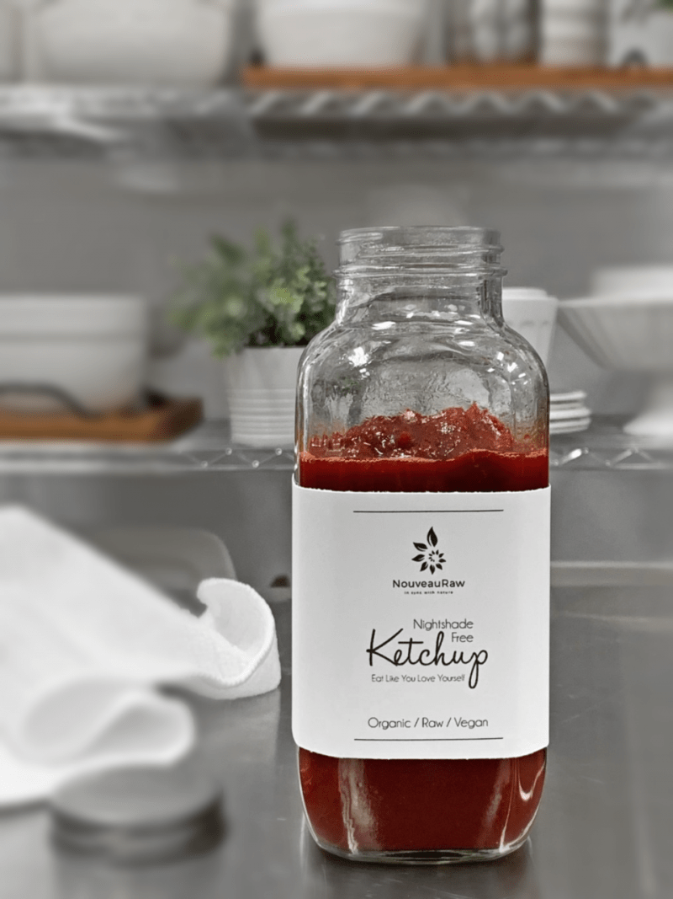
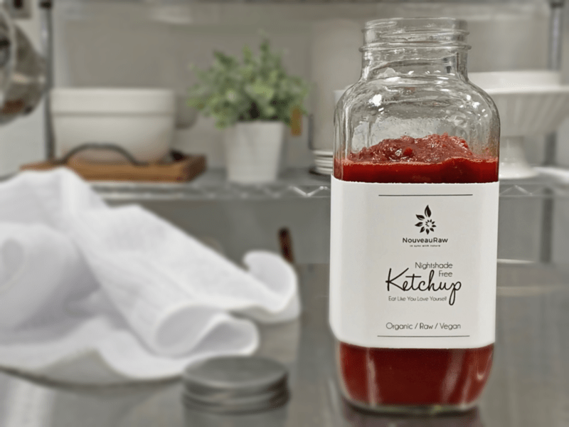
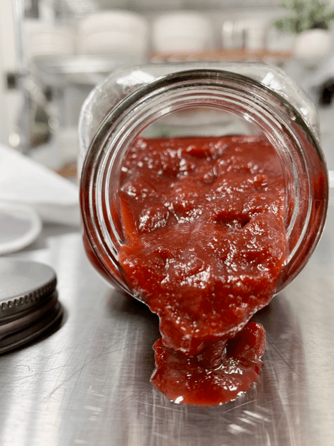

Ketchup | Nightshade Free | Oil-Free

I created this recipe as a special request from a subscriber. She has adverse reactions to
Nightshades but missed having ketchup.
To be upfront, I was nervous about presenting the finished product to Bob. He holds claim to not loving the flavor of pumpkin, and he despises beets. But he is my official taste tester, so he took a TINY taste test, then a bigger one, then another… before long he was eating it by the spoonful. (shew)
He asked for the bottle of “real” ketchup (I tried not to be offended lol) from the fridge for comparison. He tried a spoon of that, then of mine. He loved it far more than the commercially made version! Roll-me-over-in-the-pumpkin-patch-and-bathe-me-in-beet-juice!
This ketchup is a little on the sweet side, so please taste test as you go, and don’t be afraid to start with lesser amounts at first, adjusting the sweet/spice ratio to your liking.
So what’s the big deal with Nightshades?
Do you suffer from any of the following? Joint pain, stiffness upon waking, or stiffness after sitting for long periods, muscle pain and tension, muscle tremors, sensitivity to weather changes, poor healing, insomnia, skin rashes, heartburn, stomach discomfort, digestive difficulties, headaches, mood swings, depression, chronic pain, inflammation, arthritis, or rheumatism?
If so, you may have a problem with Nightshades as they can cause permeability in our intestinal membranes (known as leaky gut), all of which may contribute to autoimmune disease. If someone is healthy, with low inflammation in their body, a balanced immune system, and a balanced and strong digestive tract, they can often eat nightshade vegetables without a problem. However, people with autoimmune disease are vulnerable, as nightshades often exacerbate symptoms.
What are nightshade vegetables? Tomatoes, tomatillos, potatoes, eggplant, pimento, bell peppers (green, red, yellow, cherry), banana peppers, hot peppers of all kinds (green, red, chili), paprika, cayenne, goji berries, ground cherries, and ashwagandha (an ayurvedic herb). Tobacco is also a nightshade, and so is Jimson weed.
The Latin name for this family of plants is Solanaceae because all of them produce an alkaloid compound called solanine. This chemical is part of these plants’ natural defense systems, acting as a nerve poison on insects that try to eat the plants.

Curious to know if nightshades are negatively affecting you? Try a challenge by avoiding all nightshades for three months. Print out a list of nightshades and tape it to your fridge and keep a copy in your purse or wallet so you can quickly refer to it if you eat out.
First and foremost, become a label reader because many processed foods contain nightshades. After three months, slowly begin to reintroduce one nightshade at a time. Take note of any aches, pains, stiffness, loss of energy, headaches, respiratory problems, or any other symptoms. You may find that the quality of your daily health will dramatically improve after eliminating nightshades from your diet.
A challenge is called a challenge for a reason, and giving up foods can be difficult. But if you suffer from any of the ailments listed above, wouldn’t it be worth it? Don’t worry, though, the world hasn’t come to an end, even if it begins to feel like it. If you’re craving potatoes, replace them with sweet potatoes, beets, parsnips, or butternut squash. Are you a lover of all things hot and spicy? Not to worry, there are non-nightshade spices that will help turn up the heat such as white pepper, black pepper, ginger, and horseradish. Don’t be afraid to experiment; it doesn’t have to feel like you are giving up foods. Instead, you may find some excellent, new alternatives to add to your diet.
I didn’t mean to overwhelm you with so much information but trust me, there is still much more to learn. I suggest doing some research and find out if this is something that may be affecting your health.

Ingredients:
Yields: 1 3/4 cup
- 1 cup raw pumpkin puree or canned
- 1/4 cup beet juice
- 1/4 cup raw coconut crystals
- 6 Tbsp raw apple cider vinegar
- 1 tsp Himalayan pink salt
- 1/2 tsp onion powder
- 1/2 tsp garlic powder
- 1/4 tsp Allspice
- 1/8 tsp ground cloves
- 1/2 tsp ground cinnamon
- 1/2 tsp psyllium husk powder
Preparation:
- To make raw pumpkin puree, see the link above in the ingredient list. If you are not able to locate fresh sugar pumpkins and if you are ok with it, you can use canned. Be sure to get organic, BPA-free pumpkin puree without any other added ingredients.
- In a blender combine the pumpkin puree, beet juice, coconut crystals, apple cider vinegar, salt, onion powder, garlic powder, Allspice, cloves, cinnamon, and psyllium husk powder. Blend until smooth.
- *Allspice – use with caution for the elimination stage of AIP. You can quickly eliminate the allspice and double the cloves.
- If you don’t have any Allspice, you can create your own by mixing 1 Tbsp of each spice; ground cinnamon, ground cloves, and ground nutmeg. Store in an airtight container.
- Pour into an airtight container and store in the fridge for about seven days.
© AmieSue.com